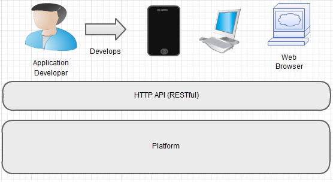

A presentation introducing the OpenMF platform.
OpenMF = The Community for Open Source Microfinance @ http://www.openmf.org/
This presentation will involve active demonstration of the API on our demo server.
Tools of use
The key concept of importance is that all platform capabilities are exposed and easily consumable through a RESTful HTTP API. The goal of the API is to empower developers to develop apps on top of the platform.
The platform is developed with Cloud and multi-tenancy in mind. The api documentation runs against a tenant that is identified by the tenant identifier: default
For this demo I added a second tenant with a tenant identifier: latam (username/password for this tenant is: quipo/quipo)
To get a grasp of the API documentation basics you should:
Show generic options through the clients api - https://demo.openmf.org/api-docs/apiLive.htm#genopts
Demonstrate RESTful API style using RESTClient and docs
Demonstrate RESTful API style using RESTClient and docs
Demonstrate RESTful API style using RESTClient and docs
Demonstrate RESTful API style using RESTClient and docs
Demonstrate reference app features across clients, loans, datatables, reports.
The platform at present encapsulates the foundation of microfinance concepts such as clients, loans, fees, charges, staff/loan officers, simple accounting. Going forward the plan is to act on any or all of the following:
Lots of possibilities but whats important is we evolve the platforms microfinance cababilities - through collobaration with community specialists with a willing customer on the end of requirements.
/
#